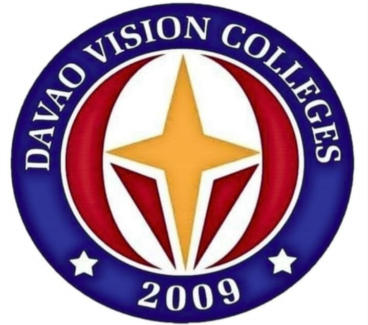

Welcome to BSED-English
BSED-English Program
Explore core subjects per level designed to empower future educators offered by Davao Vision Colleges, Inc.
| Social media: |
 |
 |
Subjects per level:
1st year
1st semester subjects:
- Introduction to Linguistics
- Language Culture & Society
- Structures of English
- Understanding the Self
- Mathematics in the Modern World
- Gender and Society
- Intro to Bible & Basic Christian Doctrine
- Movement Enhancement
- National Service Training Program
2nd semester subjects:
- Principles & Theories of Language Aquasition
- Language Prog & Policies in Multingligual Societies
- Language Learning Materials Development
- The Contemporary World
- Purposive Communication
- Environmental Science & Management
- The Life & Teachings Jesus
- TheChild&AdolescentLearner&LearningPrinciples
- Fitness Exercises
- National Service Training Program
2nd year
1st semester subjects:
- Teaching & Assessment of Literature Studies
- Teaching & Assessment of the Macro Skills
- Teaching & Assessment of Grammar
- Speech & Theater Arts
- Living in the IT Era
- Facilitating Learner-Centered Teaching
- Building & Enhancing New Literacies Across the Cur
- Technology for Teaching & Learning 1
- Physical ActivityTowardsHealth&Fitness(PATH-FIT1)
2nd semester subjects:
- Children & Adolescent Literature
- Mythology and Folkflore
- Survey of Philippines History
- Readings in Philippines History
- Art Appreciation
- Science, Technology & Society
- The Teaching Profession
- Found of Special & Inclusive Educw/Intro to Guide&Coun
- Physical Ativity Towards Health&Fitness(PATH-FIT 2)
3rd year
1st semester subjects:
- The Teacher and the School Curriculumn
- Assessment of Learing 1
- Survey of Afro-Asian Literature
- Survey of English & American Literature
- Contemporary, Popular Literature and Emergent Literature
- Literary Criticism
- Technnical Writing
- Technology for Teaching & Learning 2
- Learning, Speaking , Reeading and Writing Korean
2nd semester subjects:
- Life & Works of Rizal
- Ethics
- The TeacherandtheCommunity,Sch,Cul&Org,Leadership
- Creative Writing
- English for Specific Purposes
- Laguange Reserch 1
- Social Philosophy, Values and Peace Education
- Campus Journalism
4rth year
1st semester subjects:
- Field Study 1 ObservationsOfTeaching-Learning in Actual
- Field Study 2 Participation & Teaching Assistantship
- Language Research 2
- Competency Skills Appraisal 1(Gen Ed Subjects)
2nd semester subjects:
- Teaching Intership
- Competency Skills Appraisal 2 (Prof & Major Subjects)